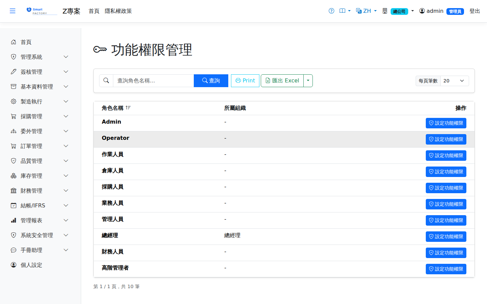
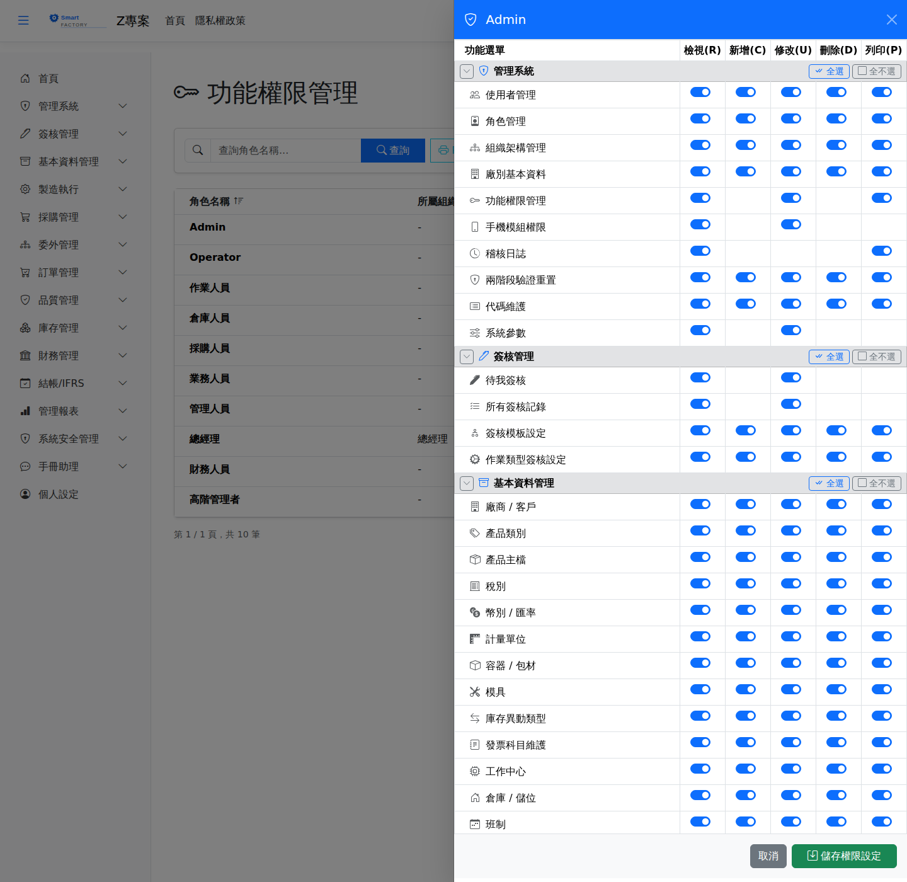

功能權限設定Permission Settings
選單位置：管理系統 → 權限設定 | 權限：目前身份為 AdminMenu: System Administration → Permission Settings | Permission: current role is Admin
功能權限設定是Permission settings are 決定「誰能看到什麼、能做什麼」的地方where you decide who sees what and who may do what。它以. Permissions are granted 角色by role為單位授權：先在清單挑一個角色，再在權限矩陣中逐一畫面勾選讀取／新增／修改／刪除／列印五種動作。: pick a role from the list, then tick the five actions — read, create, update, delete and print — screen by screen in the permission matrix.
沒有勾選就是沒有權限：Not ticked means not allowed:本系統採 the system works on 預設拒絕default-deny。沒有勾「讀取」的畫面不會出現在該角色的選單，直接輸入網址也會被擋下，不是只有隱藏而已。. A screen with no "read" tick does not appear in that role's menu, and typing its address directly is blocked as well — it is not merely hidden.

功能權限設定畫面截圖（示意，實際模組/畫面依系統版本而異）Permission settings screenshot (illustrative; the modules and screens shown vary by version)

點「設定功能權限」後開啟的權限矩陣：依模組群組分區，每列一個畫面，每欄一種動作The permission matrix that opens after clicking "Set permissions": grouped by module, one screen per row and one action per column
權限矩陣的五種動作The five actions in the matrix
| 動作Action | 代表什麼What it means |
|---|---|
| 檢視(R)View (R) | 看得到這個選單項目、進得去畫面、查得到資料。The menu item is visible, the screen can be opened and the data can be queried. 它是其他四種動作的前提It is the precondition for the other four。. |
| 新增(C)Create (C) | 畫面上出現「新增」按鈕，並可建立新資料。The "Add" button appears and new records can be created. |
| 修改(U)Update (U) | 可編輯既有資料。單據類畫面的過帳、核准等狀態異動也歸在這一項。Existing records can be edited. On document screens, actions that change status such as posting or approving fall under this too. |
| 刪除(D)Delete (D) | 可刪除資料（多數畫面另有使用中檢查，權限有也未必刪得掉）。Records can be deleted; most screens additionally check whether the record is in use, so having the permission does not always mean it can be removed. |
| 列印(P)Print (P) | 可列印或匯出（Excel／CSV／JSON）。Printing and exporting (Excel, CSV, JSON) are allowed. |
某些畫面天生沒有全部五種動作——例如報表只有讀取與列印，稽核日誌不可能有新增。Some screens do not have all five actions by nature: a report has only read and print, and an audit log can hardly have create. 矩陣中該欄空白（沒有開關）就是該畫面不支援該動作An empty cell with no switch means the screen does not support that action，不是漏畫。, not that it was left out.
操作步驟Steps
設定某個角色的權限Setting the permissions of a role
1
點選左側選單「管理系統 > 權限設定」，按「查詢」列出角色。Choose "System Administration > Permission Settings" in the left-hand menu and click "Search" to list the roles.
2
點該角色的編輯，右側滑出權限矩陣，依模組群組（基本資料、製造、採購…）分區列出所有畫面。Click edit on the role; the matrix slides out on the right, listing every screen grouped by module (master data, manufacturing, purchasing and so on).
3
逐一勾選。每個模組群組的標題列有「全選」，可一次勾滿整個模組。Tick what is needed. Each module heading has a "Select all" that fills in the whole module at once.
4
按「儲存」。設定Click "Save". The change takes effect 立即生效immediately，該角色的使用者重新整理頁面就會看到新的選單。; users with that role see the new menu as soon as they refresh the page.
儲存是整份覆蓋，不是只存有變動的：Saving replaces the whole matrix, not just what changed:按下儲存時，系統會先清掉這個角色 when you save, the system first clears 全部all既有權限，再依畫面上目前的勾選狀態重建。因此請 of this role's existing permissions and then rebuilds them from what is ticked on screen. So 在同一次開啟中完成所有調整make all your changes in one visit，不要在矩陣還沒載入完整時就儲存。, and do not save while the matrix is still loading.
新角色開通權限的順序The order for opening up a new role
1
先到「角色管理」建立角色（含組織單位與可用廠別）。Create the role under "Role Management" first, with its organization unit and allowed plants.
2
回到本畫面勾選權限。Come back here and tick the permissions.
3
到「使用者管理」把角色指派給人。Assign the role to people under "User Management".
4
若該角色也要用手機端，另外到「手機模組權限」設定手機功能。兩套權限If the role also uses the mobile app, set its mobile functions under "Mobile Module Permissions" as well. The two sets of permissions are 彼此獨立independent of each other，桌面版勾好不等於手機版能用。: ticking the desktop matrix does not enable anything on the phone.
為什麼有些畫面在矩陣裡找不到：Why some screens are not in the matrix:首頁與個人設定人人可用，不列入矩陣。管理系統中的使用者、角色、組織架構、廠別、權限設定、手機權限設定、兩步驟驗證重置與授權狀態 the home page and personal settings are available to everyone and are not listed. The user, role, organization, plant, permission settings, mobile permission settings, two-step verification reset and license status screens under system administration are 只限目前身份為 Admin 時使用available only while your current role is Admin，也不列入矩陣——這些畫面能改的是「誰有什麼權限」，交給矩陣等於讓能進權限設定的人替自己升權。屬於 Admin 的人切換成其他身份後，這些項目同樣會從選單消失、也進不去。代碼維護、稽核日誌、系統參數、簽核範本與單據簽核設定則和其他畫面一樣，依矩陣的勾選決定。, and are not listed either: those screens change who may do what, so handing them to the matrix would let anyone who can open permission settings promote themselves. Someone who belongs to Admin but has switched to another role loses these menu items and cannot open them either. Code maintenance, the audit log, system parameters, approval templates and document approval settings follow the matrix like every other screen.
匯出Export
清單可匯出 Excel（.xlsx）、CSV 或 JSON，內容為角色名稱、英文名稱與組織單位。The list can be exported as Excel (.xlsx), CSV or JSON, containing the role name, its English name and its organization unit. 匯出的是角色清單，不含權限矩陣的勾選內容The export is the list of roles, not the ticks in the matrix。.